(10) OOD: MNIST -> CelebA#
host = any, device = cuda:1
Motivation:
device_idx = 1
device = f'cuda:{device_idx}'
print(f"device: {device} ——— host: {os.uname().nodename}")
device: cuda:1 ——— host: mach
Setup#
from base.helper import filter_boundaries
from utils.animation import animate_recons
anim_dir = pjoin(tmp_dir, 'animations/ood')
os.makedirs(anim_dir, exist_ok=True)
print(sorted(os.listdir(anim_dir)))
[ 'Kyoto-wht+translate-to-CelebA138_kms-(512,56,3)_fwd-(1,3)_speed-2.0.mp4', 'MNIST+rotate-to-CelebA100_kms-(192,41,3)_fwd-(3,7)_dtheta-4.0.mp4', 'MNIST+rotate-to-CelebA138_cherrypicked_kms-(192,58,3)_fwd-(3,7)_dtheta-4.0.mp4', 'MNIST+rotate-to-CelebA138_kms-(192,58,3)_fwd-(3,0)_dtheta-4.0.mp4', 'MNIST+rotate-to-CelebA138_kms-(192,58,3)_fwd-(3,5)_dtheta-4.0.mp4', 'MNIST+rotate-to-CelebA138_kms-(192,58,3)_fwd-(3,7)_dtheta-4.0.mp4', 'MNIST+rotate-to-ImageNet32_kms-(192,8,3)_fwd-(3,7)_dtheta-15.mp4', 'MNIST+rotate-to-ImageNet32_kms-(192,8,3)_fwd-(3,7)_dtheta-4.0.mp4', 'MNIST+rotate-to-ImageNet32_kms-(192,8,3)_fwd-(3,7)_dtheta-4.0_FULL.mp4', 'MNIST+rotate-to-ImageNet32_kms-(192,8,3)_fwd-(3,7)_dtheta=2.0.mp4', 'MNIST+rotate-to-ImageNet32_kms-(192,8,3)_fwd-(3,7)_dtheta=4.0.mp4', 'all_samples' ]
Load model (MNIST)#
from analysis.final import get_list_of_fits
patterns = ['MNIST+rotate_t-(16,8,4)_b-1_kms-(192,8,3)', 'fwd-(3,7)']
fits, root = get_list_of_fits(patterns)
print(fits)
[ 'poisson_<ngd|lin>_MNIST+rotate_t-(16,8,4)_b-1_kms-(192,8,3)_fwd-(3,7)_recon-mse_chewie-0_(2025_09_08,18:47)', 'poisson_<ngd|lin>_MNIST+rotate_t-(16,8,4)_b-1_kms-(192,8,3)_fwd-(3,7)_recon-mse_dtheta-15_yoru-0_(2025_09_08,2 2:25)' ]
fit = 'poisson_<ngd|lin>_MNIST+rotate_t-(16,8,4)_b-1_kms-(192,8,3)_fwd-(3,7)_recon-mse_chewie-0_(2025_09_08,18:47)'
# fit = 'poisson_<ngd|lin>_MNIST+rotate_t-(16,8,4)_b-1_kms-(192,8,3)_fwd-(3,7)_recon-mse_dtheta-15_yoru-0_(2025_09_08,22:25)'
tr, meta = load_model_lite(pjoin(root, fit), device=device)
meta['checkpoint']
100
sanity check#
tr.model.show(order='u0');

dt_str = '\n'.join([
f"dt_enc = {tr.model.layer.log_dt_enc[0].exp().item():0.3f}",
f"dt_fwd = {tr.model.layer.log_dt_fwd[0].exp().item():0.3f}",
])
print(dt_str)
dt_enc = 0.426 dt_fwd = 1.909
%%time
results = tr.analysis('vld', t_total=1000, n_data_batches=2)
_ = plot_convergence(results=results, color='C0')
batch #1, (t = 999): 100%|██████████████| 2/2 [01:06<00:00, 33.02s/it]
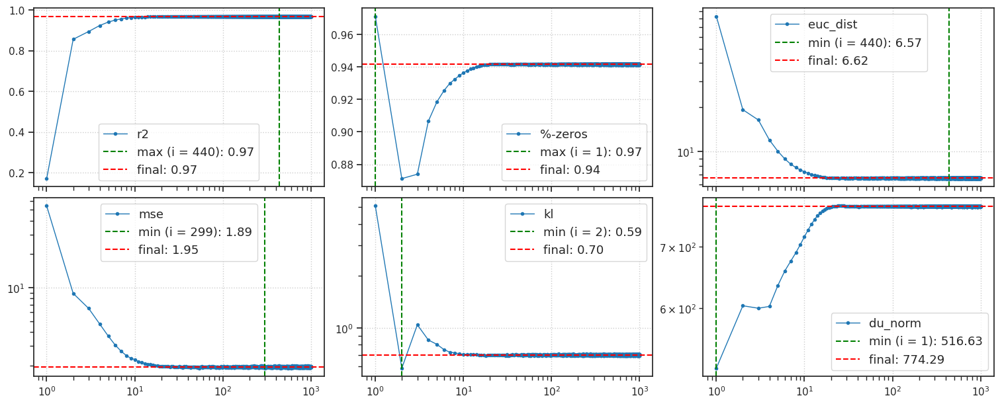
CPU times: user 1min 7s, sys: 848 ms, total: 1min 8s
Wall time: 1min 7s
prepare CelebA data#
compute mnist variance mask#
sigma = tr.data_dependent_init(
t_total=300,
n_data_batches=5,
data_batch_sz=2_000,
dry_run=True,
verbose=True,
)
batch #4, (t = 299): 100%|██████████████| 5/5 [00:04<00:00, 1.22it/s]
var_mnist = tonp(torch.square(sigma.squeeze()))
mask_mnist = var_mnist / np.max(var_mnist)
fig, axes = create_figure(1, 2, (6, 2), width_ratios=[1, 1.5])
im = axes[0].imshow(mask_mnist, cmap='Greys')
plt.colorbar(im, ax=axes[0])
sns.histplot(mask_mnist.ravel(), label='mask_mnist', ax=axes[1])
axes[1].legend()
plt.show()
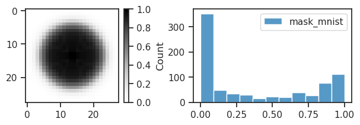
get celeba dataloader#
%%time
_, vld, _ = make_dataset('CelebA', device='cpu', skip_trn=True)
CPU times: user 19.8 s, sys: 3min 53s, total: 4min 13s
Wall time: 50.6 s
x = vld[0]
x_shift_scaled = (x + 1.0) / 2.0
x_shift_scaled.shape
torch.Size([19867, 3, 178, 178])
weights = torch.tensor(
[0.299, 0.587, 0.114],
device=x_shift_scaled.device,
dtype=x_shift_scaled.dtype,
).view(1, 3, 1, 1)
# rescale to [0, 1], grayscale
# w/ BT.601 luma, keep channel dim
x_gray = torch.sum(
x_shift_scaled * weights,
dim=1, keepdim=True,
)
x_gray = x_gray.clamp(0, 1)
x_gray.shape
torch.Size([19867, 1, 178, 178])
nrows, ncols = 2, 10
fig, axes = create_figure(nrows, ncols, (2 * ncols, 2 * nrows), 'all', 'all')
for i in range(ncols):
x2p = np.transpose(tonp(x_shift_scaled[i]), (1, 2, 0))
axes[0, i].imshow(x2p)
x2p = tonp(x_gray[i].squeeze())
axes[1, i].imshow(x2p, cmap='Greys_r', vmin=0, vmax=1)
remove_ticks(axes, False)
plt.show()
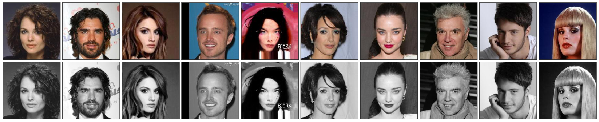
new_stim_dim = x_shift_scaled.shape[-1]
mask_mnist_up = F_vis.resize(
torch.tensor(mask_mnist).unsqueeze(0),
size=[new_stim_dim, new_stim_dim],
interpolation=F_vis.InterpolationMode.BICUBIC,
antialias=True,
).squeeze()
mask_mnist_up = tonp(mask_mnist_up)
mask_mnist_up = mask_mnist_up / np.max(mask_mnist_up)
imshow(mask_mnist_up, vmin=0, vmax=1);
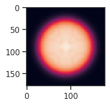
histplot(mask_mnist_up.ravel());
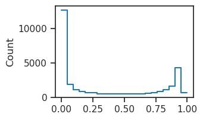
mask_tensor = torch.tensor(
data=mask_mnist_up,
device=x_gray.device,
dtype=x_gray.dtype,
).unsqueeze(0).unsqueeze(0)
x_gray_masked = x_gray * mask_tensor
x_gray_masked.shape
torch.Size([19867, 1, 178, 178])
histplot(x_gray_masked[:10].ravel());
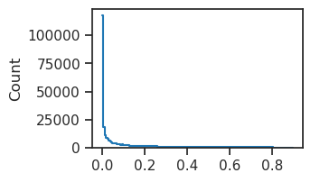
np.quantile(x_gray_masked[:100].ravel(), q=0.99)
0.765519624352455
nrows, ncols = 2, 10
fig, axes = create_figure(nrows, ncols, (2 * ncols, 2 * nrows), 'all', 'all')
for i in range(ncols):
x2p = np.transpose(tonp(x_shift_scaled[i]), (1, 2, 0))
axes[0, i].imshow(x2p)
x2p = tonp(x_gray_masked[i].squeeze())
axes[1, i].imshow(x2p, cmap='Greys_r', vmin=0, vmax=0.75)
remove_ticks(axes, False)
plt.show()
fit = 'poisson_<ngd|lin>_MNIST+rotate_t-(16,8,4)_b-1_kms-(192,8,3)_fwd-(3,7)_recon-mse_chewie-0_(2025_09_08,18:47)'
# fit = 'poisson_<ngd|lin>_MNIST+rotate_t-(16,8,4)_b-1_kms-(192,8,3)_fwd-(3,7)_recon-mse_dtheta-15_yoru-0_(2025_09_08,22:25)'
# fit = 'poisson_<ngd|lin>_MNIST+rotate_t-(16,8,4)_b-2_kms-(192,8,3)_fwd-(3,0)_recon-mse_yoru-0_(2025_09_08,18:36)'
# fit = 'poisson_<ngd|lin>_MNIST+rotate_t-(16,8,4)_b-1_kms-(192,8,3)_recon-mse_chewie-0_(2025_09_07,16:06)'
tr, meta = load_model_lite(pjoin(root, fit), device=device)
tr.print()
poisson_MNIST+rotate_t-(16,8,4)_b-1_kms-(192,8,3)_fwd-(3,7)_<ngd|lin> b200-ep100-lr(0.0005)_temp(0.05)_gr(250)_(2025_09_08,18:47)
df = tr.model.update_model_dims(x_gray_masked.shape[-1])
print(df)
print(tr.model.layer.dec)
mode computed parameter value 0 deconv True input_size 58 1 deconv False output_size 178 2 deconv False kernel_size 7 3 deconv False stride 3 4 deconv False padding 0 5 deconv False output_padding 0
ConvDictionary(in_channels=192, out_channels=1, kernel_size=7, stride=3)
imshow(tr.model.layer.dec_log_sigma.squeeze(), cmap='nipy_spectral')
plt.colorbar();
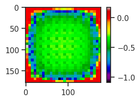
get celeba feeder#
feeder_celeba = tr.feeder_vld.fork(
reinit=True,
x=x_gray_masked,
y=vld[1],
shuffle=False,
drop_last=False,
batch_size=256,
# max_delta_theta=2.0,
)
d_thetas = feeder_celeba.apply_anneal(-1)
fig, ax = create_figure(1, 1, (4, 1.8))
sns.histplot(tonp(d_thetas), ax=ax)
ax.axvline(-feeder_celeba.max_delta_theta, color='r', ls='--')
ax.axvline(feeder_celeba.max_delta_theta, color='r', ls='--')
ax.set_title(r"$\Delta \theta$")
plt.show()
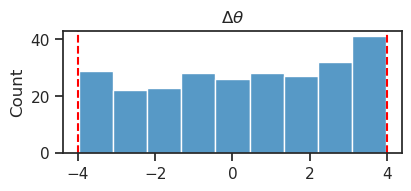
%%time
results = tr.analysis(feeder_celeba, t_total=100, n_data_batches=1, verbose=True)
_ = plot_convergence(results=results, color='firebrick')
batch #0, (t = 99): 100%|███████████████| 1/1 [00:21<00:00, 21.70s/it]
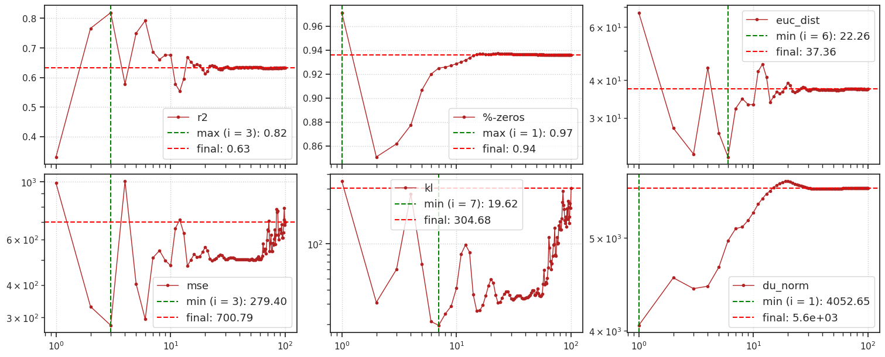
CPU times: user 22.6 s, sys: 365 ms, total: 23 s
Wall time: 22.9 s
## Was: fwd-(3,0)
batch #0, (t = 99): 100%|███████████████| 1/1 [00:01<00:00, 1.88s/it]
CPU times: user 2.98 s, sys: 188 ms, total: 3.16 s
Wall time: 3.12 s
xtract imgnet features#
%%time
output = tr.xtract_ftr(
data=feeder_celeba,
t_total=1000,
save_freq=1,
n_data_batches=1,
return_state=False,
return_recon=True,
verbose=True,
)
list(output)
batch #0, (t = 999): 100%|█████████████| 1/1 [04:57<00:00, 297.74s/it]
CPU times: user 3min 49s, sys: 1min 10s, total: 4min 59s
Wall time: 4min 59s
['r2', 'mse', 'du_norm_0', 'recon', 'true', 'times']
r2_samples = tonp(compute_r2(
true=feeder_celeba.to(output['true'][:, -1]),
pred=feeder_celeba.to(output['recon'][:, -1]),
))
r2_samples.shape
(256,)
best_r2_indices = np.argsort(r2_samples)[::-1]
r2_samples[best_r2_indices][:10]
array([0.9240499 , 0.8869034 , 0.8814724 , 0.8709932 , 0.8588997 ,
0.85766834, 0.85732585, 0.8572919 , 0.85601795, 0.85106647],
dtype=float32)
d_thetas = tonp(feeder_celeba.current_delta_theta)
def pareto_front_indices(f1, f2):
# maximize both f1 and f2
f1, f2 = np.asarray(f1), np.asarray(f2)
n = len(f1)
is_dom = np.zeros(n, dtype=bool)
for i in range(n):
if is_dom[i]:
continue
# j dominates i if j>=i in both and > in at least one
dominate_i = (f1 >= f1[i]) & (f2 >= f2[i]) & ((f1 > f1[i]) | (f2 > f2[i]))
if dominate_i.any():
is_dom[i] = True
return np.where(~is_dom)[0]
def crowding_distance(f1, f2):
# larger distance means more isolated
n = len(f1)
dist = np.zeros(n)
for f in (np.asarray(f1), np.asarray(f2)):
order = np.argsort(f)
dist[order[0]] = dist[order[-1]] = np.inf
span = f[order[-1]] - f[order[0]]
if span == 0:
continue
for i in range(1, n - 1):
dist[order[i]] += (f[order[i + 1]] - f[order[i - 1]]) / span
return dist
def select_by_pareto(r2, dtheta, k=6):
r2 = np.asarray(r2)
a = np.abs(np.asarray(dtheta)) / 4.0
chosen = []
remaining = np.arange(len(r2))
while len(chosen) < k and len(remaining) > 0:
front = pareto_front_indices(r2[remaining], a[remaining])
front_idx = remaining[front]
if len(chosen) + len(front_idx) <= k:
chosen.extend(front_idx.tolist())
remaining = np.setdiff1d(remaining, front_idx, assume_unique=False)
else:
# break ties using crowding distance to encourage spread
cd = crowding_distance(r2[front_idx], a[front_idx])
order = np.argsort(-cd)
need = k - len(chosen)
chosen.extend(front_idx[order[:need]].tolist())
break
return np.array(chosen)
best_incides = select_by_pareto(r2_samples, d_thetas)
r2_samples[best_incides], d_thetas[best_incides]
(array([0.649761 , 0.9240499 , 0.85732585, 0.80926895, 0.7991861 ,
0.8869034 ], dtype=float32),
array([-3.978092 , 0.10206979, -1.8092072 , 3.8116987 , 3.960772 ,
-0.61897284], dtype=float32))
mask_thres = 0.2
imshow(mask_mnist_up > mask_thres);
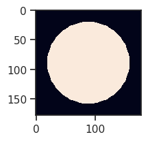
true_to_anim = output['true'][best_incides]
recon_to_anim = output['recon'][best_incides]
true_to_anim, recon_to_anim = filter_boundaries(
[true_to_anim, recon_to_anim],
mask=mask_mnist_up > mask_thres,
)
true_to_anim.shape, recon_to_anim.shape
((6, 1000, 1, 138, 138), (6, 1000, 1, 138, 138))
np.quantile(true_to_anim.ravel(), 0.99), np.quantile(recon_to_anim.ravel(), 0.99)
(0.8888930082321167, 0.9834476715326312)
mp4_file_name = '_'.join([
f"{tr.model.cfg.dataset}-to-CelebA{true_to_anim.shape[-1]}",
'cherrypicked',
tr.model.cfg.str_kms,
tr.model.cfg.str_fwd,
f"dtheta-{tr.model.cfg.feeder_cfg['max_delta_theta']}",
])
mp4_file_name = f"{mp4_file_name}.mp4"
print(mp4_file_name)
MNIST+rotate-to-CelebA138_cherrypicked_kms-(192,58,3)_fwd-(3,7)_dtheta-4.0.mp4
%%time
_ = animate_recons(
save_file=pjoin(anim_dir, mp4_file_name),
recon=recon_to_anim,
true=true_to_anim,
n_samples=6,
vmin=0.0,
vmax=0.9,
figsize=(15.0, 5.5),
# dry_run=True,
)
CPU times: user 5min 54s, sys: 56.4 s, total: 6min 51s
Wall time: 8min 56s
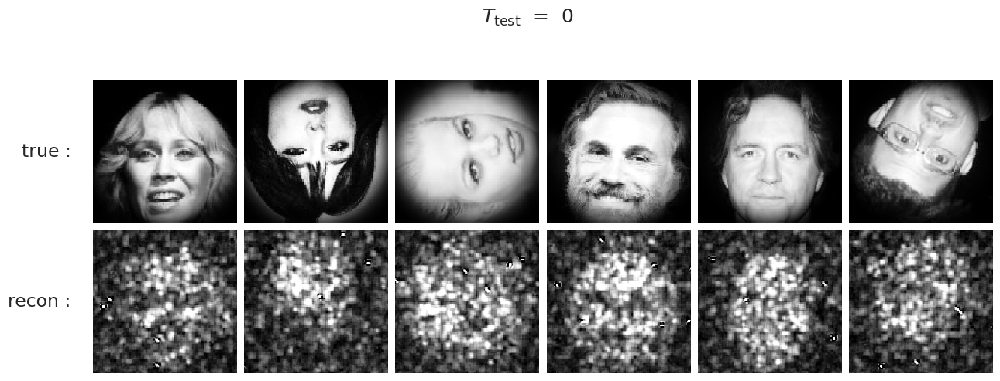
Loop over fits#
from analysis.final import get_list_of_fits
patterns = ['MNIST+rotate_t-(16,8,4)']
fits, root = get_list_of_fits(patterns)
print(fits)
[ 'poisson_<ngd|lin>_MNIST+rotate_t-(16,8,4)_b-1_kms-(192,8,3)_dual-dt_chewie-0_(2025_09_05,19:42)', 'poisson_<ngd|lin>_MNIST+rotate_t-(16,8,4)_b-1_kms-(192,8,3)_fwd-(3,0)_recon-mse_chewie-0_(2025_09_08,18:48)', 'poisson_<ngd|lin>_MNIST+rotate_t-(16,8,4)_b-1_kms-(192,8,3)_fwd-(3,7)_recon-mse_chewie-0_(2025_09_08,18:47)', 'poisson_<ngd|lin>_MNIST+rotate_t-(16,8,4)_b-1_kms-(192,8,3)_fwd-(3,7)_recon-mse_dtheta-15_yoru-0_(2025_09_08,2 2:25)', 'poisson_<ngd|lin>_MNIST+rotate_t-(16,8,4)_b-1_kms-(192,8,3)_recon-mse_chewie-0_(2025_09_07,15:41)', 'poisson_<ngd|lin>_MNIST+rotate_t-(16,8,4)_b-1_kms-(192,8,3)_recon-mse_chewie-0_(2025_09_07,16:06)', 'poisson_<ngd|lin>_MNIST+rotate_t-(16,8,4)_b-1_kms-(192,8,3)_recon-mse_sample-dtheta-uniform_max-dtheta=4.0_che wie-0_(2025_09_08,08:26)', 'poisson_<ngd|lin>_MNIST+rotate_t-(16,8,4)_b-1_kms-(192,8,3)_recon-prob_dual-dt_chewie-0_(2025_09_06,07:39)', 'poisson_<ngd|lin>_MNIST+rotate_t-(16,8,4)_b-1_kms-(192,8,3)_yoru-0_(2025_09_05,19:26)', 'poisson_<ngd|lin>_MNIST+rotate_t-(16,8,4)_b-2_kms-(192,8,3)_fwd-(3,0)_recon-mse_yoru-0_(2025_09_08,18:36)' ]
%%time
for fit in fits:
try:
tr, meta = load_model_lite(pjoin(root, fit), device=device)
except RuntimeError:
continue
tr.model.update_model_dims(x_gray_masked.shape[-1])
feeder_celeba = tr.feeder_vld.fork(
reinit=True,
x=x_gray_masked,
y=vld[1],
shuffle=False,
drop_last=False,
batch_size=50,
# max_delta_theta=2.0,
)
feeder_celeba.apply_anneal(-1)
results = tr.analysis(feeder_celeba, t_total=100, n_data_batches=1, verbose=True)
print(fit)
_ = plot_convergence(results=results, color='firebrick')
print('-' * 100, '\n\n')
batch #0, (t = 99): 100%|███████████████| 1/1 [00:01<00:00, 1.88s/it]
poisson_<ngd|lin>_MNIST+rotate_t-(16,8,4)_b-1_kms-(192,8,3)_dual-dt_chewie-0_(2025_09_05,19:42)
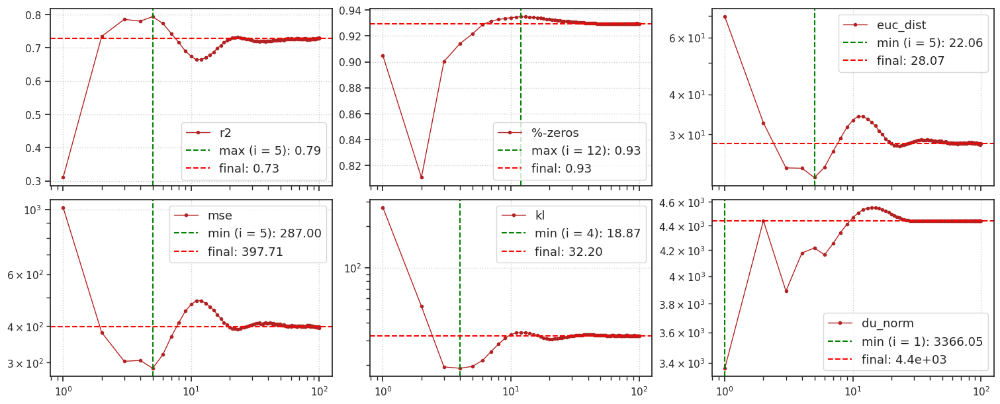
----------------------------------------------------------------------------------------------------
batch #0, (t = 99): 100%|███████████████| 1/1 [00:01<00:00, 1.87s/it]
poisson_<ngd|lin>_MNIST+rotate_t-(16,8,4)_b-1_kms-(192,8,3)_fwd-(3,0)_recon-mse_chewie-0_(2025_09_08,18:48)
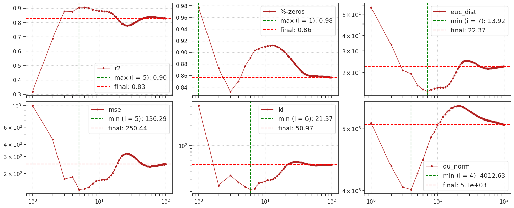
----------------------------------------------------------------------------------------------------
batch #0, (t = 99): 100%|███████████████| 1/1 [00:02<00:00, 2.39s/it]
poisson_<ngd|lin>_MNIST+rotate_t-(16,8,4)_b-1_kms-(192,8,3)_fwd-(3,7)_recon-mse_chewie-0_(2025_09_08,18:47)
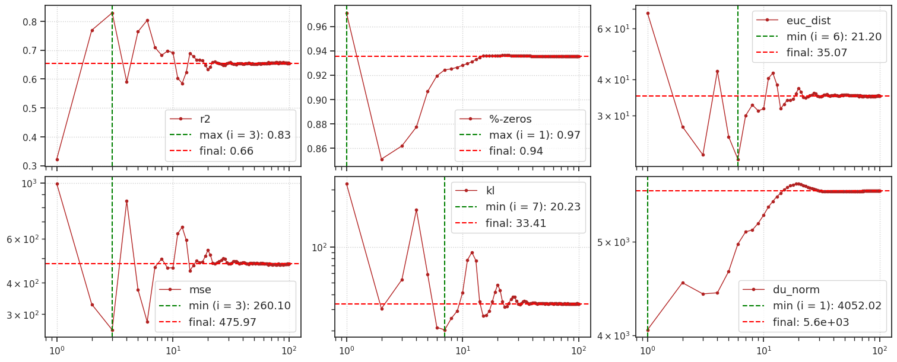
----------------------------------------------------------------------------------------------------
batch #0, (t = 99): 100%|███████████████| 1/1 [00:02<00:00, 2.41s/it]
poisson_<ngd|lin>_MNIST+rotate_t-(16,8,4)_b-1_kms-(192,8,3)_fwd-(3,7)_recon-mse_dtheta-15_yoru-0_(2025_09_08,22:25)
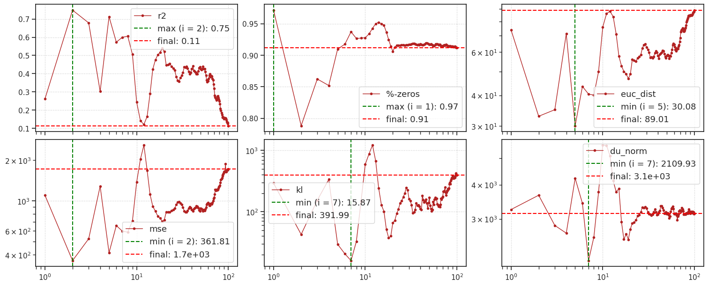
----------------------------------------------------------------------------------------------------
batch #0, (t = 99): 100%|███████████████| 1/1 [00:01<00:00, 1.88s/it]
poisson_<ngd|lin>_MNIST+rotate_t-(16,8,4)_b-1_kms-(192,8,3)_recon-mse_chewie-0_(2025_09_07,15:41)
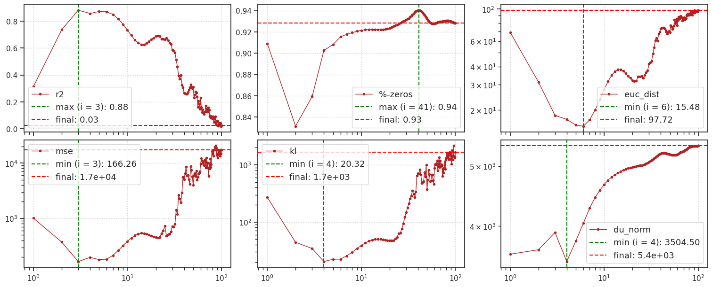
----------------------------------------------------------------------------------------------------
batch #0, (t = 99): 100%|███████████████| 1/1 [00:03<00:00, 3.93s/it]
poisson_<ngd|lin>_MNIST+rotate_t-(16,8,4)_b-1_kms-(192,8,3)_recon-mse_chewie-0_(2025_09_07,16:06)
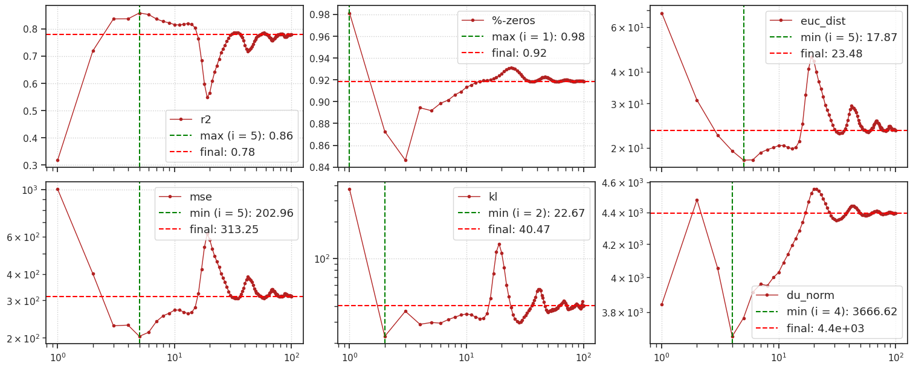
----------------------------------------------------------------------------------------------------
batch #0, (t = 99): 100%|███████████████| 1/1 [00:03<00:00, 3.82s/it]
poisson_<ngd|lin>_MNIST+rotate_t-(16,8,4)_b-1_kms-(192,8,3)_recon-mse_sample-dtheta-uniform_max-dtheta=4.0_chewie-0 _(2025_09_08,08:26)
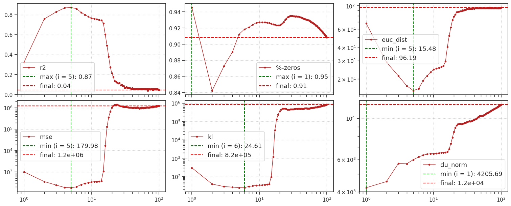
----------------------------------------------------------------------------------------------------
batch #0, (t = 99): 100%|███████████████| 1/1 [00:01<00:00, 1.89s/it]
poisson_<ngd|lin>_MNIST+rotate_t-(16,8,4)_b-1_kms-(192,8,3)_recon-prob_dual-dt_chewie-0_(2025_09_06,07:39)
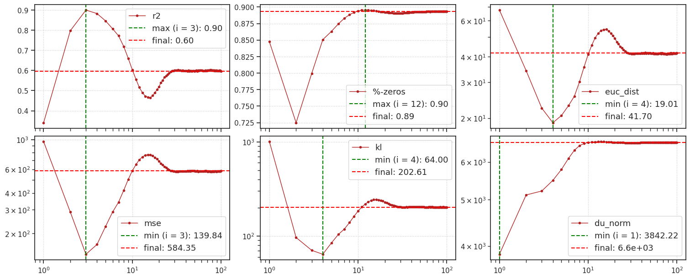
----------------------------------------------------------------------------------------------------
batch #0, (t = 99): 100%|███████████████| 1/1 [00:01<00:00, 1.86s/it]
poisson_<ngd|lin>_MNIST+rotate_t-(16,8,4)_b-2_kms-(192,8,3)_fwd-(3,0)_recon-mse_yoru-0_(2025_09_08,18:36)
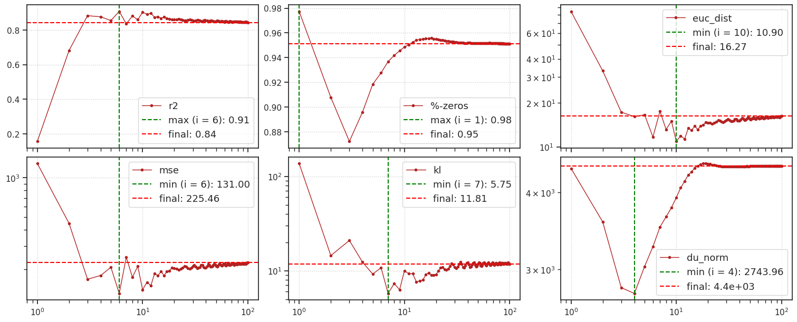
----------------------------------------------------------------------------------------------------
CPU times: user 1min 20s, sys: 18.9 s, total: 1min 38s
Wall time: 40.9 s
Kyoto-translate to CelebA-rotate?#
a = 'poisson_Kyoto-wht+translate_t-(16,8,4)_b-1_kms-(512,8,3)_fwd-(1,3)_<ngd|lin>'
b = 'b100-ep300-lr(0.0005)_temp(0.05)_gr(500)_max-speed-2.0_(2025_09_09,09:25)'
tr, meta = load_model_main(a, b, device=device)
tr.print()
poisson_Kyoto-wht+translate_t-(16,8,4)_b-1_kms-(512,8,3)_fwd-(1,3)_<ngd|lin> b100-ep300-lr(0.0005)_temp(0.05)_gr(500)_(2025_09_09,09:25)
df = tr.model.update_model_dims(x_gray_masked.shape[-1])
print(df)
print(tr.model.layer.dec)
imshow(tr.model.layer.dec_log_sigma.squeeze(), cmap='nipy_spectral')
plt.colorbar();
mode computed parameter value 0 deconv True input_size 56 1 deconv False output_size 178 2 deconv False kernel_size 11 3 deconv False stride 3 4 deconv False padding 0 5 deconv True output_padding 2
ConvDictionary(in_channels=512, out_channels=1, kernel_size=11, stride=3, output_padding=2)
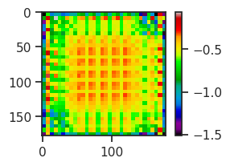
%%time
results = tr.analysis(feeder_celeba, t_total=100, n_data_batches=1, verbose=True)
_ = plot_convergence(results=results, color='firebrick')
batch #0, (t = 99): 100%|███████████████| 1/1 [00:04<00:00, 4.46s/it]
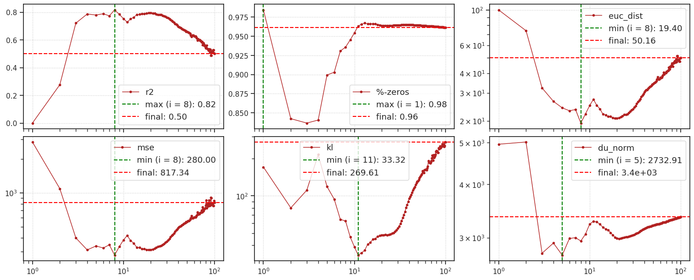
CPU times: user 5.49 s, sys: 257 ms, total: 5.75 s
Wall time: 5.71 s
%%time
output = tr.xtract_ftr(
data=feeder_celeba,
t_total=1000,
save_freq=1,
data_batch_sz=64,
n_data_batches=1,
return_state=False,
return_recon=True,
verbose=True,
)
list(output)
batch #0, (t = 999): 100%|██████████████| 1/1 [00:53<00:00, 53.40s/it]
CPU times: user 45 s, sys: 8.86 s, total: 53.9 s
Wall time: 53.5 s
['r2', 'mse', 'du_norm_0', 'recon', 'true', 'times']
mp4_file_name = '_'.join([
f"{tr.model.cfg.dataset}-to-CelebA{true_to_anim.shape[-1]}",
tr.model.cfg.str_kms,
tr.model.cfg.str_fwd,
f"speed-{tr.model.cfg.feeder_cfg['max_speed']}",
])
mp4_file_name = f"{mp4_file_name}.mp4"
print(mp4_file_name)
Kyoto-wht+translate-to-CelebA138_kms-(512,56,3)_fwd-(1,3)_speed-2.0.mp4
%%time
_ = animate_recons(
save_file=pjoin(anim_dir, mp4_file_name),
recon=recon_to_anim,
true=true_to_anim,
n_samples=12,
vmin=0.0,
vmax=0.8,
# dry_run=True,
)
CPU times: user 4min 42s, sys: 16.7 s, total: 4min 59s
Wall time: 5min 27s
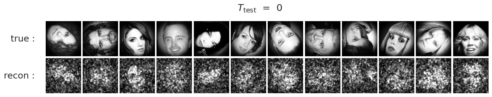
Loop over all data, save them all#
fit = 'poisson_<ngd|lin>_MNIST+rotate_t-(16,8,4)_b-1_kms-(192,8,3)_fwd-(3,7)_recon-mse_chewie-0_(2025_09_08,18:47)'
# fit = 'poisson_<ngd|lin>_MNIST+rotate_t-(16,8,4)_b-1_kms-(192,8,3)_fwd-(3,7)_recon-mse_dtheta-15_yoru-0_(2025_09_08,22:25)'
# fit = 'poisson_<ngd|lin>_MNIST+rotate_t-(16,8,4)_b-2_kms-(192,8,3)_fwd-(3,0)_recon-mse_yoru-0_(2025_09_08,18:36)'
# fit = 'poisson_<ngd|lin>_MNIST+rotate_t-(16,8,4)_b-1_kms-(192,8,3)_recon-mse_chewie-0_(2025_09_07,16:06)'
tr, meta = load_model_lite(pjoin(root, fit), device=device)
tr.print()
poisson_MNIST+rotate_t-(16,8,4)_b-1_kms-(192,8,3)_fwd-(3,7)_<ngd|lin> b200-ep100-lr(0.0005)_temp(0.05)_gr(250)_(2025_09_08,18:47)
mask_thres = 0.2
imshow(mask_mnist_up > mask_thres)
plt.show()
stim_dim_masked = filter_boundaries(mask_mnist_up > mask_thres).shape[-1]
stim_dim_orig = tr.model.cfg.input_sz[-1]
stim_dim_orig, stim_dim_masked
(28, 138)
df = tr.model.update_model_dims(x_gray_masked.shape[-1])
print(df)
print(tr.model.layer.dec)
mode computed parameter value 0 deconv True input_size 58 1 deconv False output_size 178 2 deconv False kernel_size 7 3 deconv False stride 3 4 deconv False padding 0 5 deconv False output_padding 0
ConvDictionary(in_channels=192, out_channels=1, kernel_size=7, stride=3)
imshow(tr.model.layer.dec_log_sigma.squeeze(), cmap='nipy_spectral')
plt.colorbar();
tr.feeder_vld.max_delta_theta
4.0
max_delta_theta_new = (
tr.feeder_vld.max_delta_theta *
stim_dim_orig / stim_dim_masked
)
max_delta_theta_new
0.8115942028985508
feeder_celeba = tr.feeder_vld.fork(
reinit=True,
x=x_gray_masked,
y=vld[1],
shuffle=False,
drop_last=False,
batch_size=360,
max_delta_theta=max_delta_theta_new,
)
d_thetas = feeder_celeba.apply_anneal(-1)
fig, ax = create_figure(1, 1, (4, 1.8))
sns.histplot(tonp(d_thetas), ax=ax)
ax.axvline(-feeder_celeba.max_delta_theta, color='r', ls='--')
ax.axvline(feeder_celeba.max_delta_theta, color='r', ls='--')
ax.set_title(r"$\Delta \theta$")
plt.show()
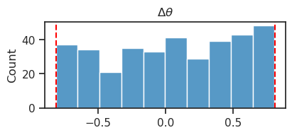
%%time
results = tr.analysis(feeder_celeba, t_total=100, n_data_batches=1, verbose=True)
_ = plot_convergence(results=results, color='firebrick')
batch #0, (t = 99): 100%|███████████████| 1/1 [01:09<00:00, 69.60s/it]
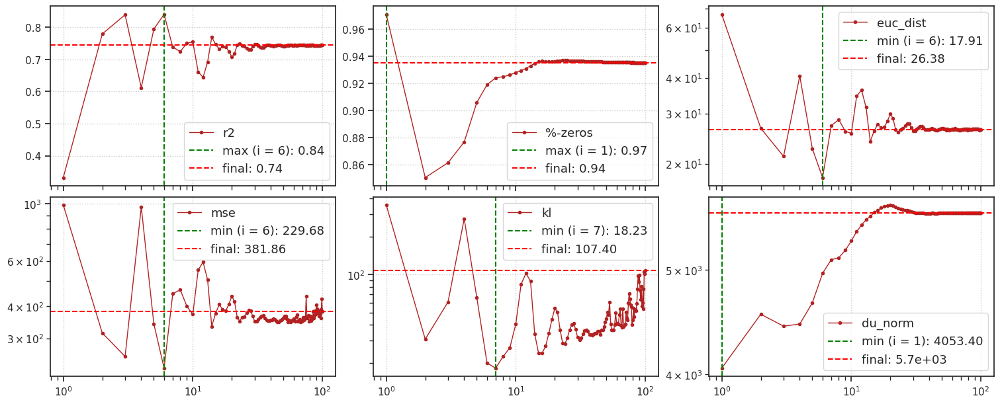
CPU times: user 1min 10s, sys: 1.36 s, total: 1min 11s
Wall time: 1min 11s
%%time
output = tr.xtract_ftr(
data=feeder_celeba,
t_total=1000,
save_freq=1,
n_data_batches=1,
return_state=False,
return_recon=True,
verbose=True,
)
list(output)
batch #0, (t = 999): 100%|█████████████| 1/1 [13:05<00:00, 785.93s/it]
CPU times: user 11min 6s, sys: 2min 3s, total: 13min 10s
Wall time: 13min 9s
['r2', 'mse', 'du_norm_0', 'recon', 'true', 'times']
r2_samples = tonp(compute_r2(
true=feeder_celeba.to(output['true'][:, -1]),
pred=feeder_celeba.to(output['recon'][:, -1]),
))
r2_samples.shape
(360,)
histplot(r2_samples);
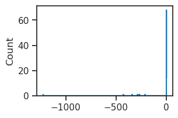
histplot(r2_samples[r2_samples > 0]);
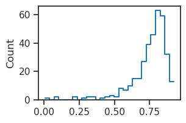
best_r2_indices = np.argsort(r2_samples)[::-1]
%%time
for i in tqdm(range(int(len(output['true']) / 6))):
current_sample_ids = best_r2_indices[range(i * 6, (i + 1) * 6)]
current_sample_r2 = r2_samples[current_sample_ids]
current_sample_r2[current_sample_r2 < 0] = 0.0
name = f"ids-{set(current_sample_ids)}_r2-{current_sample_r2.mean():0.2f}".replace(', ', ',')
true_to_anim = output['true'][current_sample_ids]
recon_to_anim = output['recon'][current_sample_ids]
a
true_to_anim, recon_to_anim = filter_boundaries(
[true_to_anim, recon_to_anim],
mask=mask_mnist_up > mask_thres,
)
_ = animate_recons(
save_file=pjoin(anim_dir, 'all_samples', f"{name}.mp4"),
recon=recon_to_anim,
true=true_to_anim,
n_samples=6,
vmin=0.0,
vmax=0.9,
figsize=(15.0, 5.5),
# dry_run=True,
)
print(f"[PROGRESS] name = {name}: DONE!\n\n")
0%| | 0/60 [00:00<?, ?it/s]
[PROGRESS] name = ids-{4,261,115,308,149,283}_r2-0.92: DONE!
2%|▋ | 1/60 [08:42<8:33:19, 522.02s/it]
[PROGRESS] name = ids-{288,163,302,54,120,255}_r2-0.90: DONE!
3%|█▎ | 2/60 [17:35<8:31:01, 528.64s/it]
[PROGRESS] name = ids-{160,329,77,143,211,217}_r2-0.89: DONE!
5%|██ | 3/60 [26:11<8:16:59, 523.15s/it]
[PROGRESS] name = ids-{259,102,6,337,154,63}_r2-0.88: DONE!
7%|██▋ | 4/60 [35:00<8:10:24, 525.43s/it]
[PROGRESS] name = ids-{328,205,270,48,153,318}_r2-0.87: DONE!
8%|███▍ | 5/60 [43:34<7:57:45, 521.20s/it]
[PROGRESS] name = ids-{204,269,341,213,313,287}_r2-0.86: DONE!
10%|████ | 6/60 [52:06<7:46:21, 518.18s/it]
[PROGRESS] name = ids-{354,164,294,231,43,150}_r2-0.86: DONE!
12%|████▌ | 7/60 [1:00:39<7:36:05, 516.33s/it]
[PROGRESS] name = ids-{192,14,175,17,148,223}_r2-0.86: DONE!
13%|█████▏ | 8/60 [1:09:12<7:26:29, 515.19s/it]
[PROGRESS] name = ids-{100,103,41,243,181,29}_r2-0.85: DONE!
15%|█████▊ | 9/60 [1:17:43<7:16:55, 514.03s/it]
[PROGRESS] name = ids-{194,165,232,206,245,91}_r2-0.85: DONE!
17%|██████▎ | 10/60 [1:26:10<7:06:31, 511.84s/it]
[PROGRESS] name = ids-{292,203,304,281,28,349}_r2-0.85: DONE!
18%|██████▉ | 11/60 [1:34:54<7:00:55, 515.41s/it]
[PROGRESS] name = ids-{33,15,271,151,121,316}_r2-0.85: DONE!
20%|███████▌ | 12/60 [1:43:35<6:53:49, 517.29s/it]
[PROGRESS] name = ids-{66,70,168,343,250,252}_r2-0.84: DONE!
22%|████████▏ | 13/60 [1:52:12<6:45:04, 517.11s/it]
[PROGRESS] name = ids-{107,276,86,152,187,317}_r2-0.84: DONE!
23%|████████▊ | 14/60 [2:00:58<6:38:39, 519.98s/it]
[PROGRESS] name = ids-{37,237,176,275,244,247}_r2-0.83: DONE!
25%|█████████▌ | 15/60 [2:09:43<6:30:56, 521.26s/it]
[PROGRESS] name = ids-{2,80,19,83,186,31}_r2-0.83: DONE!
27%|██████████▏ | 16/60 [2:18:24<6:22:10, 521.15s/it]
[PROGRESS] name = ids-{260,38,44,119,59,350}_r2-0.83: DONE!
28%|██████████▊ | 17/60 [2:27:01<6:12:38, 519.97s/it]
[PROGRESS] name = ids-{36,200,233,42,274,310}_r2-0.82: DONE!
30%|███████████▍ | 18/60 [2:35:49<6:05:39, 522.36s/it]
[PROGRESS] name = ids-{0,225,201,139,242,314}_r2-0.82: DONE!
32%|████████████ | 19/60 [2:44:37<5:58:09, 524.13s/it]
[PROGRESS] name = ids-{334,303,307,147,279,157}_r2-0.82: DONE!
33%|████████████▋ | 20/60 [2:53:30<5:51:16, 526.91s/it]/home/hadi/Dropbox/git/_TemporalSC/utils/plotting.py:548: RuntimeWarning: More than 20 figures have been opened. Figures created through the pyplot interface (`matplotlib.pyplot.figure`) are retained until explicitly closed and may consume too much memory. (To control this warning, see the rcParam `figure.max_open_warning`). Consider using `matplotlib.pyplot.close()`.
fig, axes = plt.subplots(
[PROGRESS] name = ids-{226,10,46,144,85,191}_r2-0.81: DONE!
35%|█████████████▎ | 21/60 [3:02:16<5:42:14, 526.52s/it]
[PROGRESS] name = ids-{32,193,291,79,81,221}_r2-0.81: DONE!
37%|█████████████▉ | 22/60 [3:11:11<5:35:00, 528.95s/it]
[PROGRESS] name = ids-{11,340,116,23,347,351}_r2-0.81: DONE!
38%|██████████████▌ | 23/60 [3:20:10<5:28:04, 532.00s/it]
[PROGRESS] name = ids-{162,227,90,72,180,346}_r2-0.81: DONE!
40%|███████████████▏ | 24/60 [3:29:05<5:19:42, 532.85s/it]
[PROGRESS] name = ids-{64,356,305,84,215,189}_r2-0.80: DONE!
42%|███████████████▊ | 25/60 [3:37:54<5:10:15, 531.86s/it]
[PROGRESS] name = ids-{293,358,298,330,109,273}_r2-0.80: DONE!
43%|████████████████▍ | 26/60 [3:46:34<4:59:16, 528.14s/it]
[PROGRESS] name = ids-{68,71,104,209,146,315}_r2-0.80: DONE!
45%|█████████████████ | 27/60 [3:55:16<4:49:35, 526.54s/it]
[PROGRESS] name = ids-{65,295,299,179,125,94}_r2-0.79: DONE!
47%|█████████████████▋ | 28/60 [4:04:17<4:43:07, 530.86s/it]
[PROGRESS] name = ids-{352,96,234,336,61,95}_r2-0.79: DONE!
48%|██████████████████▎ | 29/60 [4:13:16<4:35:31, 533.28s/it]
[PROGRESS] name = ids-{320,353,258,262,76,177}_r2-0.79: DONE!
50%|███████████████████ | 30/60 [4:22:05<4:26:01, 532.05s/it]
[PROGRESS] name = ids-{197,236,333,174,301,183}_r2-0.78: DONE!
52%|███████████████████▋ | 31/60 [4:30:58<4:17:12, 532.14s/it]
[PROGRESS] name = ids-{170,235,142,335,184,251}_r2-0.78: DONE!
53%|████████████████████▎ | 32/60 [4:39:58<4:09:27, 534.56s/it]
[PROGRESS] name = ids-{97,331,208,24,220,285}_r2-0.77: DONE!
55%|████████████████████▉ | 33/60 [4:48:52<4:00:28, 534.38s/it]
[PROGRESS] name = ids-{256,129,322,18,53,88}_r2-0.77: DONE!
57%|█████████████████████▌ | 34/60 [4:57:45<3:51:25, 534.08s/it]
[PROGRESS] name = ids-{267,207,241,58,158,222}_r2-0.76: DONE!
58%|██████████████████████▏ | 35/60 [5:06:42<3:42:50, 534.83s/it]
[PROGRESS] name = ids-{321,110,178,309,56,124}_r2-0.76: DONE!
60%|██████████████████████▊ | 36/60 [5:15:38<3:34:04, 535.21s/it]
[PROGRESS] name = ids-{289,8,140,49,145,60}_r2-0.76: DONE!
62%|███████████████████████▍ | 37/60 [5:24:40<3:25:54, 537.13s/it]
[PROGRESS] name = ids-{324,249,135,342,89,30}_r2-0.75: DONE!
63%|████████████████████████ | 38/60 [5:33:36<3:16:48, 536.77s/it]
[PROGRESS] name = ids-{1,106,111,123,188,286}_r2-0.75: DONE!
65%|████████████████████████▋ | 39/60 [5:42:32<3:07:50, 536.71s/it]
[PROGRESS] name = ids-{325,134,112,210,52,214}_r2-0.74: DONE!
67%|█████████████████████████▎ | 40/60 [5:51:24<2:58:26, 535.34s/it]
[PROGRESS] name = ids-{161,228,272,306,311,92}_r2-0.73: DONE!
68%|█████████████████████████▉ | 41/60 [6:00:20<2:49:31, 535.35s/it]
[PROGRESS] name = ids-{224,166,7,268,13,185}_r2-0.73: DONE!
70%|██████████████████████████▌ | 42/60 [6:09:08<2:39:58, 533.22s/it]
[PROGRESS] name = ids-{355,169,75,51,248,127}_r2-0.72: DONE!
72%|███████████████████████████▏ | 43/60 [6:17:57<2:30:46, 532.13s/it]
[PROGRESS] name = ids-{327,199,141,20,182,156}_r2-0.72: DONE!
73%|███████████████████████████▊ | 44/60 [6:26:51<2:22:00, 532.53s/it]
[PROGRESS] name = ids-{196,69,101,338,339,277}_r2-0.71: DONE!
75%|████████████████████████████▌ | 45/60 [6:35:42<2:13:02, 532.15s/it]
[PROGRESS] name = ids-{35,195,5,47,117,218}_r2-0.70: DONE!
77%|█████████████████████████████▏ | 46/60 [6:44:35<2:04:12, 532.30s/it]
[PROGRESS] name = ids-{265,173,82,87,345,57}_r2-0.69: DONE!
78%|█████████████████████████████▊ | 47/60 [6:53:28<1:55:21, 532.44s/it]
[PROGRESS] name = ids-{130,319,246,26,219,159}_r2-0.68: DONE!
80%|██████████████████████████████▍ | 48/60 [7:02:22<1:46:37, 533.10s/it]
[PROGRESS] name = ids-{257,40,9,202,16,21}_r2-0.66: DONE!
82%|███████████████████████████████ | 49/60 [7:11:19<1:37:56, 534.26s/it]
[PROGRESS] name = ids-{3,133,171,212,22,348}_r2-0.65: DONE!
83%|███████████████████████████████▋ | 50/60 [7:21:19<1:32:18, 553.85s/it]
[PROGRESS] name = ids-{12,238,278,55,118,25}_r2-0.64: DONE!
85%|████████████████████████████████▎ | 51/60 [7:31:18<1:25:06, 567.42s/it]
[PROGRESS] name = ids-{290,67,230,266,50,312}_r2-0.63: DONE!
87%|████████████████████████████████▉ | 52/60 [7:40:19<1:14:35, 559.41s/it]
[PROGRESS] name = ids-{131,73,297,172,300,93}_r2-0.61: DONE!
88%|█████████████████████████████████▌ | 53/60 [7:49:19<1:04:35, 553.70s/it]
[PROGRESS] name = ids-{280,167,137,344,253,216}_r2-0.58: DONE!
90%|████████████████████████████████████ | 54/60 [7:58:17<54:53, 548.97s/it]
[PROGRESS] name = ids-{98,99,34,326,78,113}_r2-0.56: DONE!
92%|████████████████████████████████████▋ | 55/60 [8:07:00<45:06, 541.30s/it]
[PROGRESS] name = ids-{357,198,229,263,45,122}_r2-0.53: DONE!
93%|█████████████████████████████████████▎ | 56/60 [8:15:57<36:00, 540.07s/it]
[PROGRESS] name = ids-{359,296,138,108,155,126}_r2-0.46: DONE!
95%|██████████████████████████████████████ | 57/60 [8:24:49<26:52, 537.39s/it]
[PROGRESS] name = ids-{128,39,332,240,284,62}_r2-0.31: DONE!
97%|██████████████████████████████████████▋ | 58/60 [8:33:40<17:51, 535.69s/it]
[PROGRESS] name = ids-{323,132,105,74,282,190}_r2-0.07: DONE!
98%|███████████████████████████████████████▎| 59/60 [8:42:31<08:54, 534.25s/it]
[PROGRESS] name = ids-{264,136,239,114,27,254}_r2-0.00: DONE!
100%|████████████████████████████████████████| 60/60 [8:51:21<00:00, 531.36s/it]
CPU times: user 5h 58min 47s, sys: 43min 8s, total: 6h 41min 56s
Wall time: 8h 51min 21s
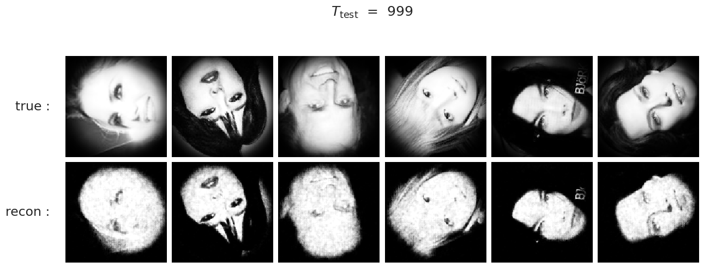
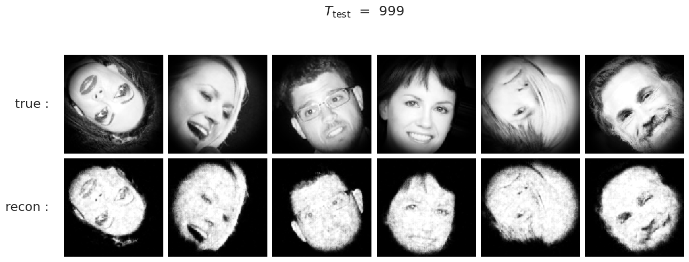
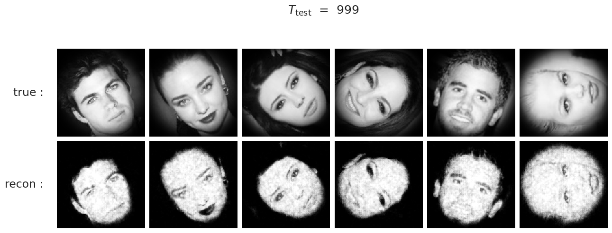
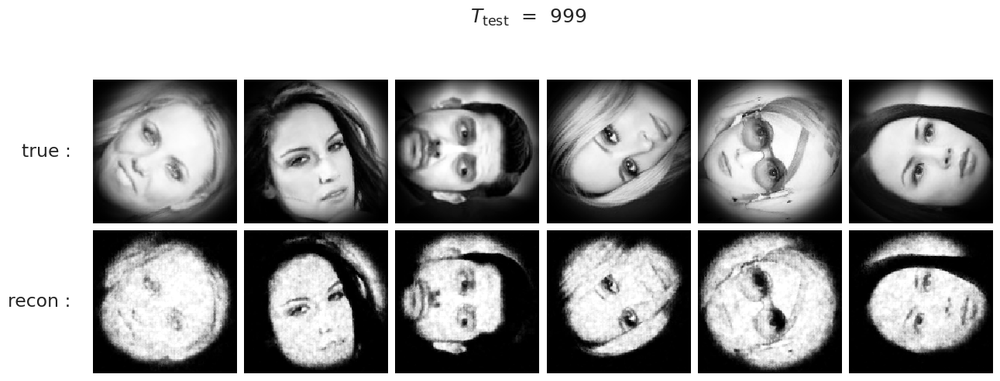
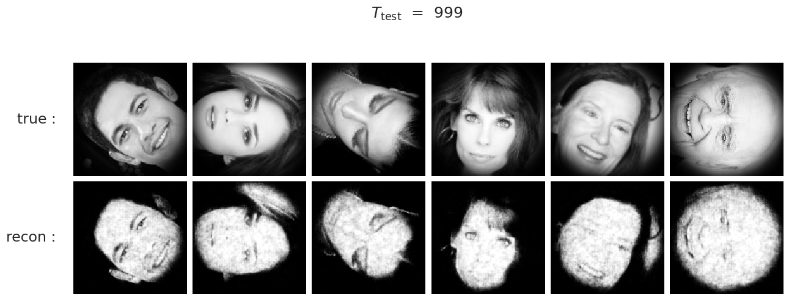
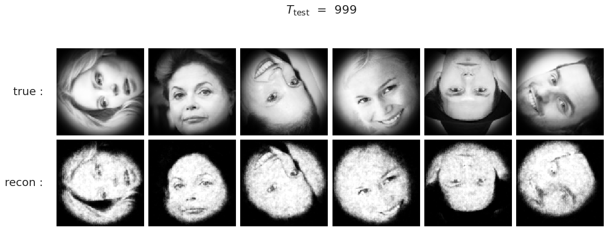
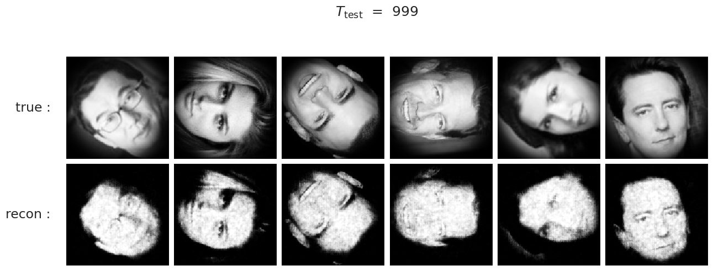
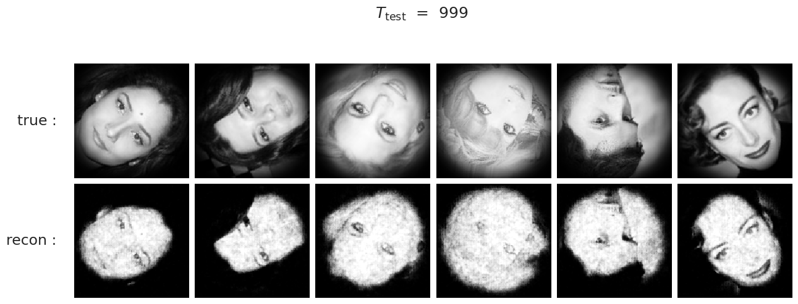
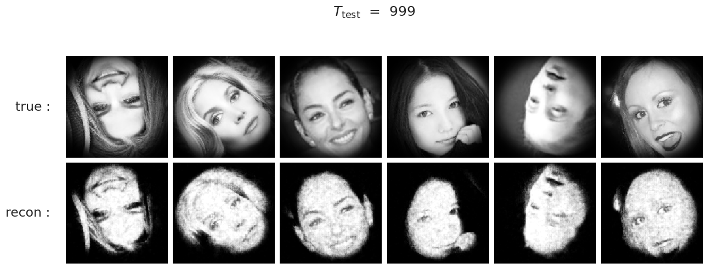
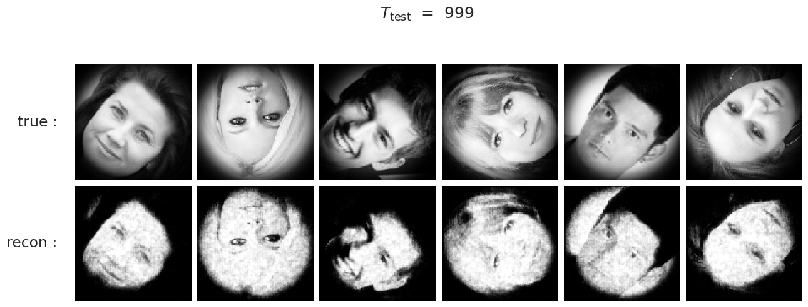
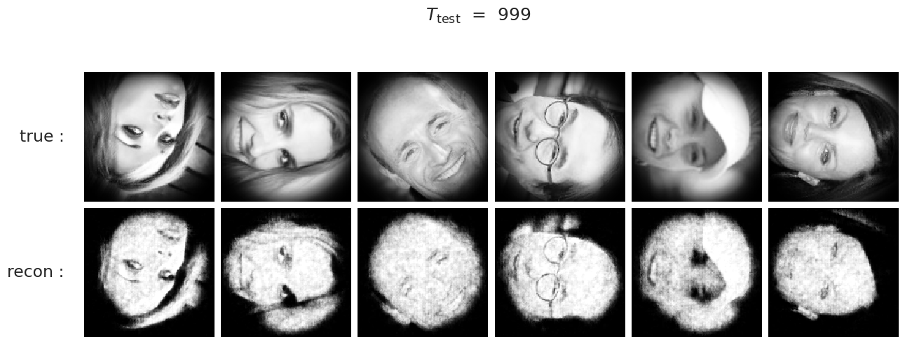
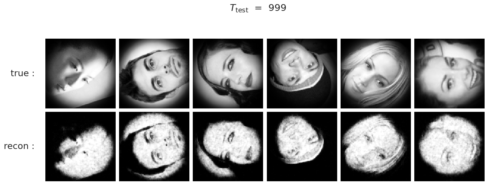
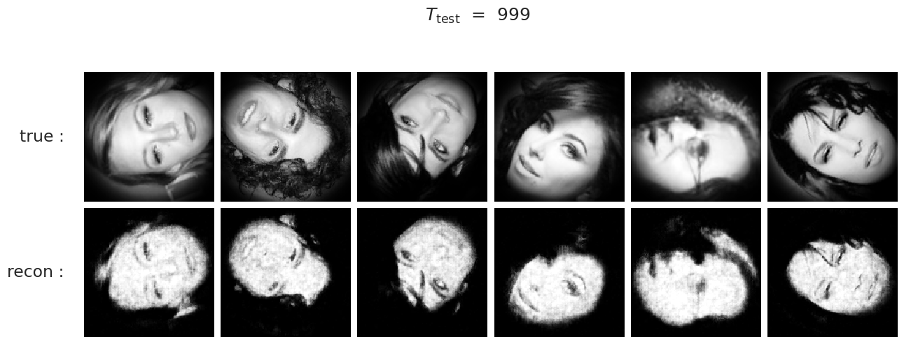
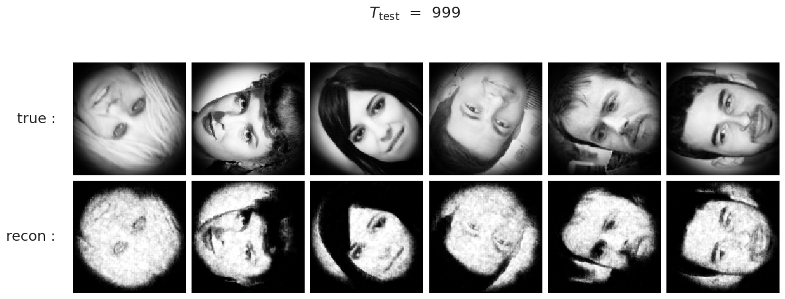
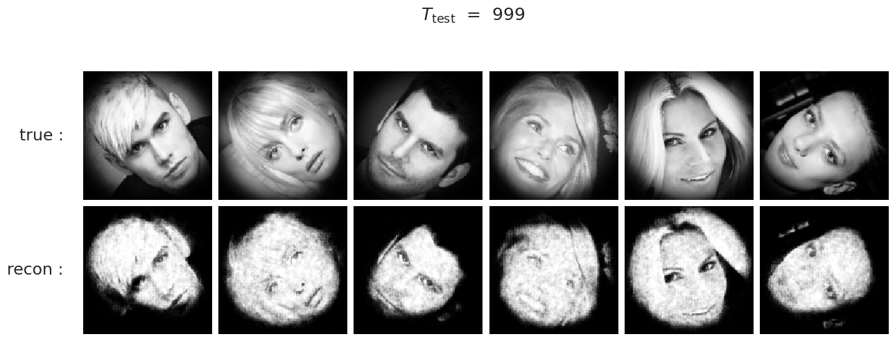
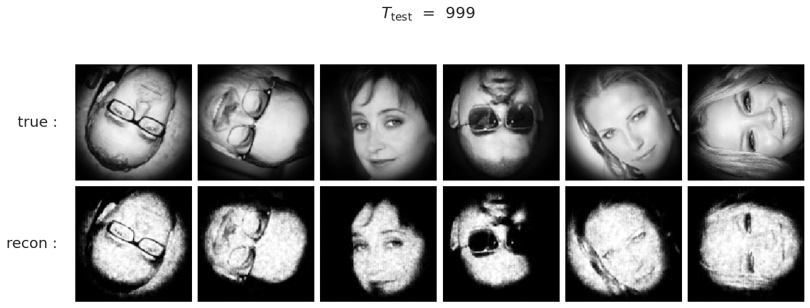
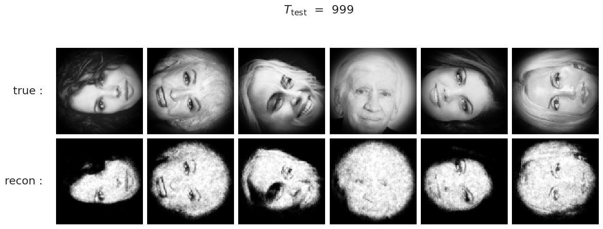
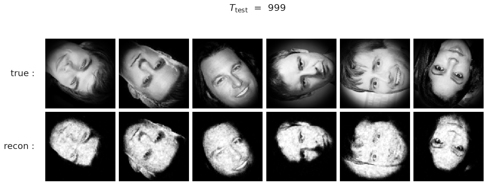
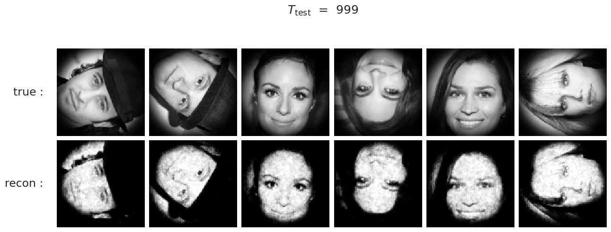
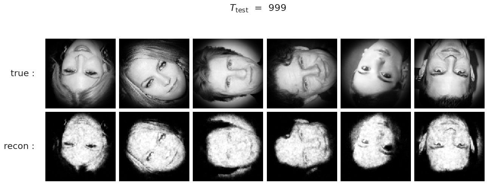
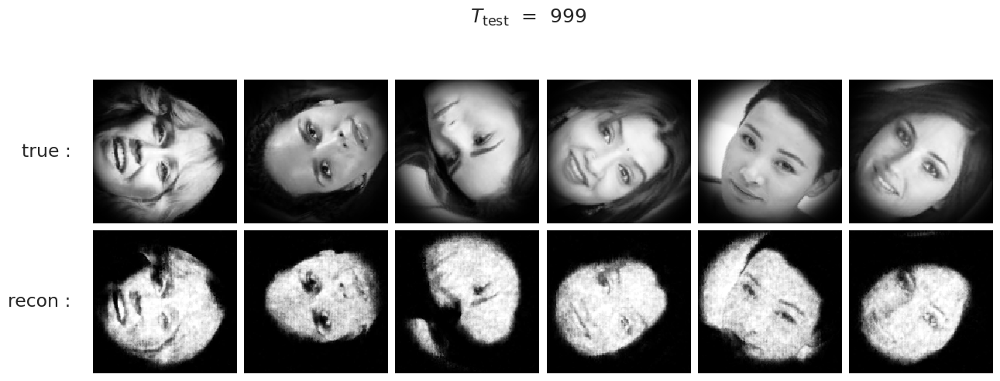
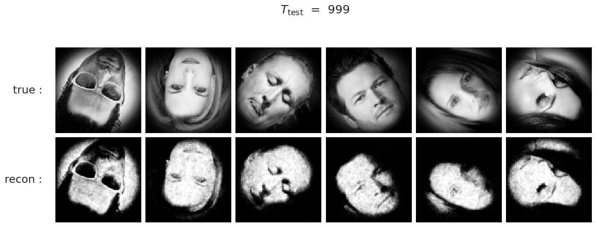
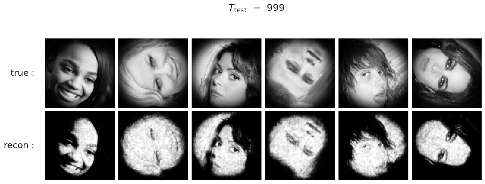
# selected_incides = [115, 6, 53, 4, 328, 153, 318, 255, 256, 185]
selected_incides = [115, 6, 53, 4, 328, 153, 318, 255, 256, 185]
r2_samples[selected_incides]
array([0.921342 , 0.87881434, 0.7667914 , 0.9155298 , 0.8676246 ,
0.8673744 , 0.86700094, 0.9009429 , 0.76814365, 0.7309555 ],
dtype=float32)
name = f"cherrypicked_ids-{set(selected_incides)}_r2-{r2_samples[selected_incides].mean():0.2f}".replace(', ', ',')
print(name)
cherrypicked_ids-{256,185,4,6,328,115,53,153,318,255}_r2-0.85
true_to_anim = output['true'][selected_incides]
recon_to_anim = output['recon'][selected_incides]
true_to_anim, recon_to_anim = filter_boundaries(
[true_to_anim, recon_to_anim],
mask=mask_mnist_up > mask_thres,
)
np.quantile(true_to_anim.ravel(), 0.99), np.quantile(recon_to_anim.ravel(), 0.99)
(0.8551976084709167, 0.9496187567710876)
%%time
_ = animate_recons(
save_file=pjoin(anim_dir, 'all_samples', f"{name}.mp4"),
recon=recon_to_anim,
true=true_to_anim,
# n_samples=6,
vmin=0.0,
vmax=0.9,
figsize=(25.0, 5.5),
dpi=100,
# dry_run=True,
)
CPU times: user 9min 27s, sys: 59.7 s, total: 10min 26s
Wall time: 13min 5s
selected_incides = [6, 115, 53, 4, 328, 185, 153, 318]
len(selected_incides)
8
feeder_celeba = tr.feeder_vld.fork(
reinit=True,
x=x_gray_masked[selected_incides],
y=vld[1][selected_incides],
shuffle=False,
drop_last=False,
batch_size=len(selected_incides),
max_delta_theta=max_delta_theta_new,
)
d_thetas = feeder_celeba.apply_anneal(-1)
fig, ax = create_figure(1, 1, (4, 1.8))
sns.histplot(tonp(d_thetas), ax=ax)
ax.axvline(-feeder_celeba.max_delta_theta, color='r', ls='--')
ax.axvline(feeder_celeba.max_delta_theta, color='r', ls='--')
ax.set_title(r"$\Delta \theta$")
plt.show()
output = tr.xtract_ftr(
data=feeder_celeba,
t_total=6_000,
save_freq=1,
n_data_batches=1,
return_state=False,
return_recon=True,
verbose=True,
)
list(output)
batch #0, (t = 5999): 100%|█████████████| 1/1 [00:41<00:00, 41.30s/it]
['r2', 'mse', 'du_norm_0', 'recon', 'true', 'times']
r2_samples = tonp(compute_r2(
true=feeder_celeba.to(output['true'][:, -1]),
pred=feeder_celeba.to(output['recon'][:, -1]),
))
r2_samples.shape
(8,)
r2_samples
array([0.8734406 , 0.9091378 , 0.7632053 , 0.8988955 , 0.848748 ,
0.73485565, 0.8705711 , 0.8727913 ], dtype=float32)
selected_incides
[6, 115, 53, 4, 328, 185, 153, 318]
name = f"cherrypicked_ids-{set(selected_incides)}_r2-{r2_samples.mean():0.2f}".replace(', ', ',')
print(name)
cherrypicked_ids-{153,4,6,328,115,53,185,318}_r2-0.85
true_to_anim, recon_to_anim = filter_boundaries(
[output['true'], output['recon']],
mask=mask_mnist_up > mask_thres,
)
np.quantile(true_to_anim.ravel(), 0.99), np.quantile(recon_to_anim.ravel(), 0.99)
(0.8613547086715698, 0.9499608874320984)
%%time
_ = animate_recons(
save_file=pjoin(anim_dir, 'all_samples', f"{name}.mp4"),
recon=recon_to_anim,
true=true_to_anim,
# n_samples=6,
vmin=0.0,
vmax=0.9,
figsize=(20.0, 5.5),
dpi=100,
fps=180,
# dry_run=True,
)
CPU times: user 11min 58s, sys: 10.1 s, total: 12min 8s
Wall time: 12min 22s
Final 6 samples#
selected_incides = [6, 115, 53, 153, 185, 318]
len(selected_incides)
6
feeder_celeba = tr.feeder_vld.fork(
reinit=True,
x=x_gray_masked[selected_incides],
y=vld[1][selected_incides],
shuffle=False,
drop_last=False,
batch_size=len(selected_incides),
max_delta_theta=max_delta_theta_new,
)
d_thetas = feeder_celeba.apply_anneal(-1)
fig, ax = create_figure(1, 1, (4, 1.8))
sns.histplot(tonp(d_thetas), ax=ax)
ax.axvline(-feeder_celeba.max_delta_theta, color='r', ls='--')
ax.axvline(feeder_celeba.max_delta_theta, color='r', ls='--')
ax.set_title(r"$\Delta \theta$")
plt.show()
output = tr.xtract_ftr(
data=feeder_celeba,
t_total=5_000,
save_freq=1,
n_data_batches=1,
return_state=False,
return_recon=True,
verbose=True,
)
list(output)
batch #0, (t = 4999): 100%|█████████████| 1/1 [00:30<00:00, 30.18s/it]
['r2', 'mse', 'du_norm_0', 'recon', 'true', 'times']
r2_samples = tonp(compute_r2(
true=feeder_celeba.to(output['true'][:, -1]),
pred=feeder_celeba.to(output['recon'][:, -1]),
))
r2_samples.shape
(6,)
selected_incides
[6, 115, 53, 153, 185, 318]
name = f"cherrypicked_ids-{set(selected_incides)}_r2-{r2_samples.mean():0.2f}".replace(', ', ',')
print(name)
cherrypicked_ids-{153,6,115,53,185,318}_r2-0.83
true_to_anim, recon_to_anim = filter_boundaries(
[output['true'], output['recon']],
mask=mask_mnist_up > mask_thres,
)
np.quantile(true_to_anim.ravel(), 0.99), np.quantile(recon_to_anim.ravel(), 0.99)
(0.8651110529899597, 0.9515472650527954)
%%time
_ = animate_recons(
save_file=pjoin(anim_dir, 'all_samples', f"{name}.mp4"),
recon=recon_to_anim,
true=true_to_anim,
# n_samples=6,
vmin=0.0,
vmax=0.95,
figsize=(15.0, 5.5),
dpi=100,
fps=180,
# dry_run=True,
)
CPU times: user 7min 40s, sys: 8.95 s, total: 7min 49s
Wall time: 7min 58s
%%time
_ = animate_recons(
save_file=pjoin(anim_dir, 'all_samples', f"{name}_HD.mp4"),
recon=recon_to_anim,
true=true_to_anim,
# n_samples=6,
vmin=0.0,
vmax=0.95,
figsize=(15.0, 5.5),
dpi=200,
fps=180,
# dry_run=True,
)
CPU times: user 11min 11s, sys: 23.1 s, total: 11min 34s
Wall time: 12min 7s
%%time
_ = animate_recons(
save_file=pjoin(anim_dir, 'all_samples', f"{name}_SD.mp4"),
recon=recon_to_anim,
true=true_to_anim,
# n_samples=6,
vmin=0.0,
vmax=0.95,
figsize=(15.0, 5.5),
dpi=80,
fps=180,
# dry_run=True,
)
CPU times: user 7min 43s, sys: 8.99 s, total: 7min 52s
Wall time: 7min 58s